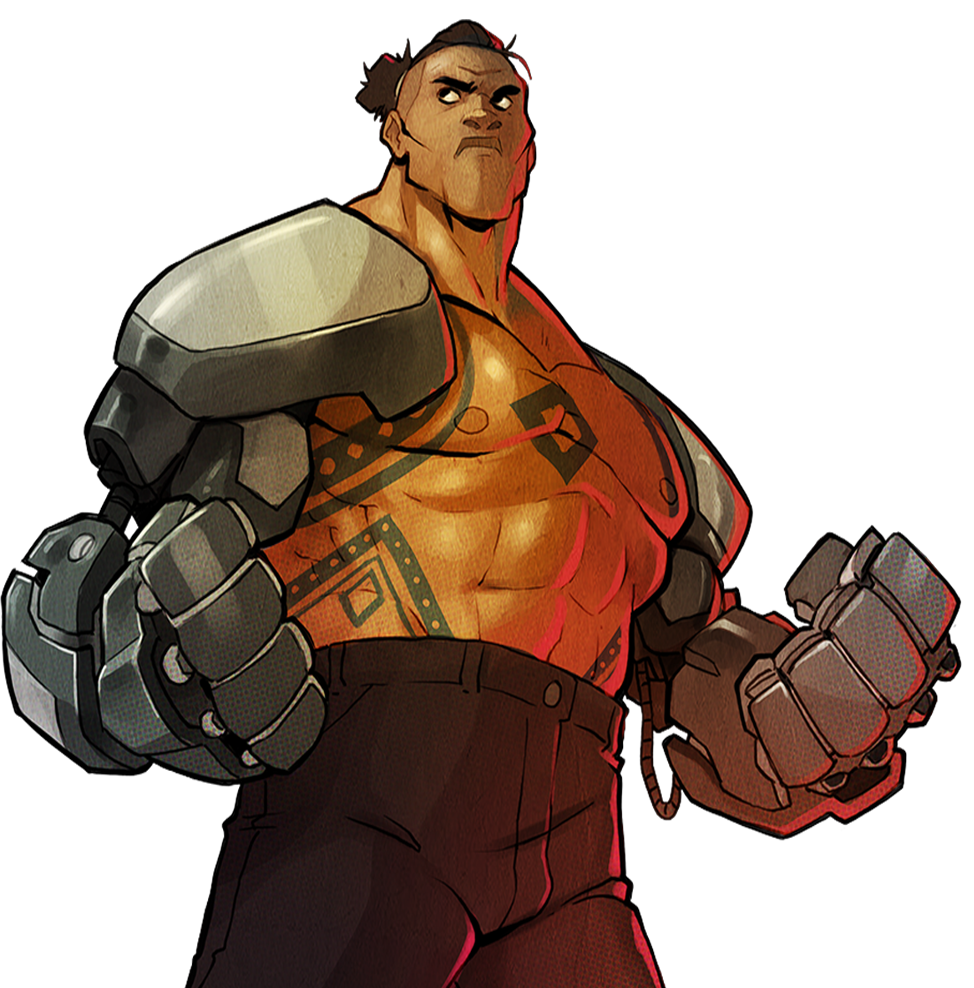
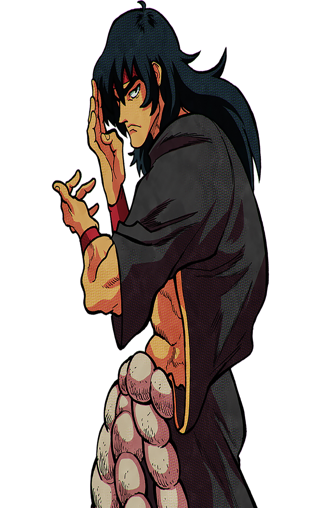

|
Home /Personagns |

|
Axel StoneHistoria
Estreou em Streets of Rage, de 1991,como um dos três policiais que deixaram
|
Blaze FieldingHistóriaBlaze faz sua estreia em Streets of Rage, de 1991, como a líder dos três policiais que deixaram a força policial corrupta da cidade, a fim de resolver a violência que assolou a cidade e descobrir os responsáveis por trás desses eventos. Junto com Adam Hunter e Axel Stone, ela consegue derrotar o líder do sindicato, o Sr. X em seu próprio quartel-general.Um ano após os eventos do primeiro jogo, Blaze, que se mudou da cidade e se tornou professora de dança, descobre junto com Axel e o irmão mais novo de Adam, "Skate", que Adam foi sequestrado pelo Sr. X, que se acreditava ter estar morto na batalha anterior, a fim de atrair Axel e Blaze para ele em retaliação por sua derrota anterior. Ela e Axel começaram a resgatar seu amigo com Skate e um lutador profissional chamado Max Thunder, que também é um dos amigos de Axel. Eles conseguem chegar à sede secreta do Sindicato em uma ilha isolada e derrotar o Sr. X mais uma vez e libertar Adam no final.A versão produzida pela Sega of America (com um enredo ligeiramente alterado para aliviar o tom do jogo, mas também um representante da dificuldade mais difícil em comparação com a versão original) fez Blaze ficar na cidade após os eventos de Streets of Rage 2 e se tornar um privado detetive. Quando informada pelo ex-pesquisador Dr. Zan que a próxima vítima do esquema maligno do Sindicato será seu velho amigo, o Chefe de Polícia, ela escreve uma carta para Axel, que havia se mudado da cidade agora trabalhando como sensei em Artes Marciais pedindo sua ajuda (como visto na seqüência de introdução) e imediatamente monta uma força-tarefa para ir em seu socorro.Blaze acabou expulsa da polícia quando se recusou a ter aulas de controle da raiva depois de entrar em uma discussão com o comissário que terminou com um soco no rosto dele. Passando seus dias como instrutora de dança, Blaze ainda manteve contato com os rumores e fofocas, eventualmente aprendendo sobre a ascensão de um novo Sindicato tentando assumir o controle da cidade. Agindo imediatamente, Blaze chamou todos os seus velhos amigos para ajudá-la.PersonalidadeBlaze tem o papel de "lutadora feminina", já que é voluntária, determinada e pronta para colocar sua vida em risco para acabar com o Sindicato. Ela tem um forte senso de justiça, mas é implacável com seus oponentes, espancando-os impiedosamente nas ruas e sangrando-os com os punhos. Algumas de suas citações do modo Batalha Bare Knuckle III mostram que ela não suporta pervertidos e muitas vezes lembra os oponentes do sexo masculino para se manterem focados na luta em vez de em seu corpo. Ela também parece um pouco orgulhosa e não aceita as derrotas com gentileza. |
Adam HunterHistóriaAdam faz sua estreia em Streets of Rage, de 1991, como um dos três policiais que deixaram a força policial corrupta da cidade para caçar pessoalmente o líder do sindicato. Junto com Axel Stone e Blaze Fielding, ele consegue derrotar o líder do sindicato Sr. X em seu próprio quartel-general.Um ano depois, no aniversário da derrota do Sr. X, Adam é emboscado em sua casa e feito refém por Shiva, o guarda-costas pessoal do Sr. X como isca para Axel e Blaze montarem um esforço de resgate. O irmão mais novo de Adam, "Skate", junta-se a eles e consegue resgatar Adam no final do jogo.Adam é mais uma vez um personagem não jogável, enviando Skate para ajudar a equipe em seu lugar. No entanto, ele é a chave para fornecer a localização do estágio final (se o General / Chefe for salvo) ou localizar e desmontar o resto das bombas (se o General / Chefe morrer). Mais tarde, ele aparece com a equipe após os créditos.Na época de Streets of Rage 4, Adam se tornou um agente das Forças Especiais, apesar de ter planejado se aposentar da polícia para cuidar de sua filha Cherry Hunter. Ele foi designado para uma força-tarefa para se infiltrar no novo Sindicato. Adam é desbloqueado após completar o Estágio 4. Conforme Estel se aproxima da equipe, ele parece derrotá-la. Ele incentiva os outros a irem, dizendo que está bem atrás deles. Ele tem um papel fundamental no resto da história, e é o único a prender o Sr. Y e a Sra. Y nos créditos do jogo.PersonalidadeAdam é visto como um homem legal e bonito que nunca desiste de uma luta. Embora às vezes muito sério, ele ocasionalmente exibia um senso de humor espirituoso, como visto em Streets of Rage 3 |
Cherry HunterHistóriaCherry é filha de Adam Hunter. Embora ela tenha herdado as habilidades de luta de seu pai, ela não desejava se tornar uma policial como ele e, portanto, decidiu seguir a carreira musical. Ela se tornou guitarrista e toca em boates da cidade. Quando Blaze Fielding chama Adam para ajudar a assumir o novo Sindicato, Cherry vai no lugar de seu pai, pois ele estava ocupado com outra tarefa.Cherry é uma garota negra americana ligeiramente musculosa com cabelo ruivo. Ela usa jeans rasgados, camisa amarela, sutiã esportivo e envolve o braço. Enquanto luta, ela mantém seu violão nas costas para que esteja pronto para uso durante o combate.PersonalidadeEla é uma jovem jovem, enérgica e ferozmente independente. Ela ama seu pai e mostra seu afeto abertamente.Cherry cumpre o papel da personagem rápida-mas-fraca no jogo, que foi preenchido por seu tio, "Skate" nos dois jogos anteriores da série. Ela tem a melhor mobilidade, sendo a única personagem capaz de correr, enquanto seu moveset é baseado em golpes rápidos e movimentos especiais nos quais ela utiliza sua guitarra |
Floyd IraiaHistóriaFloyd originalmente trabalhou na construção, mas um acidente custou-lhe os dois braços. A empresa para a qual trabalhava não o ajudou, porém, preferindo gastar seu dinheiro com advogados. Então, a ajuda veio do Dr. Gilbert Zan, que construiu para ele um novo conjunto de braços robóticos movidos por Rakushin, após o qual Floyd se tornou seu assistente e aprendiz. Quando Blaze Fielding contatou o Dr. Zan pedindo ajuda para assumir o novo Sindicato, Floyd se ofereceu para ir em seu lugar.Floyd joga como uma mistura de Max Thunder e Dr. Zan, com movimentos lentos e um moveset baseado em técnicas de luta / luta, com o benefício adicional dos braços biônicos que lhe permitem agarrar inimigos à distância, esmagar inimigos uns contra os outros e usar descargas elétricas. |  |
Estel AguireHistóriaEla é uma amazona alta e musculosa com cabelos loiros, raspada nas laterais, com uma longa trança, e usa um uniforme de policial das forças especiais. Ela aparece pela primeira vez como uma chefe, buscando a derrota dos protagonistas, até que uma reviravolta particular no final da 7ª etapa acontece, onde ela e o resto das forças policiais foram sendo enganadas pelos sindicatos do Sr. e da Sra. Y, eventualmente conseguindo as evidências para limpar os nomes dos protagonistas.é uma personagem que estreou em Streets of Rage 4. Ela é uma chefe tanto no Estágio 4 quanto no Estágio 7 do enredo principal do quarto jogo, antes de se tornar jogável via DLC Mr. X Nightmare.Estel estágio 4 tentará manter uma boa distância de você e então o acertará com um de seus ataques de longo alcance. Aproxime-se de Estel diagonalmente, isque um de seus ataques e tente puni-lo. Seu chute pula para a frente é particularmente punível devido ao atraso maior, e ela o usará muito quando estiver longe de você, então você pode deixá-la escapar e usar esse movimento e depois puni-lo.Estel estágio 7 é menos agressivo, mas você ainda pode se aproximar dela diagonalmente e acertá-la. Apenas tome cuidado para ficar de olho nas granadas e no Comissário. O Comissário não tem armadura na maioria dos ataques desta vez, então você pode mantê-lo no chão e pressioná-lo. Use as granadas a seu favor, se puder. Jogue o Comissário em Estel ou vice-versa e tenha em mente que os lances lhe dão invencibilidade. Apenas Estel deve ser derrotado para vencer a batalha, então você pode priorizá-la. (Embora no modo Boss Rush, derrotar o Comissário dá a você um bônus de Turquia.) |
Max ThunderHistóriaNa primeira aparição de Max, ele se junta a Axel, Blaze e Skate para resgatar Adam Hunter. Não se sabe muito por que ele decidiu se juntar ao trio, além de sua amizade com Axel.Max retorna em Streets of Rage 4, primeiro como um chefe controlado pela Sra. Y e depois como um personagem jogável para download. Ele usa a maioria de seus movimentos característicos do segundo jogo, como seu Thunder Tackle, Spinning Knuckle Bomb e Drop Kick.Max é um personagem jogável da série Streets of Rage. Ele é um ex-lutador profissional e bom amigo de Axel Stone, que aparece pela primeira vez em Streets of Rage 2 para ajudar Axel, Blaze Fielding e Skate a resgatar o sequestrado Adam Hunter. |
ShivaHistóriaShiva é um chefe recorrente da série Streets of Rage, aparecendo como um chefe em todos os jogos de Streets of Rage 2 em diante. Anteriormente, ele atuou como braço direito do Sr. X na Organização do Crime Sindicato em Sega Genesis / Mr. Jogos X Saga Trilogy.Shiva atua como guarda-costas pessoal do Sr. X, visto perto dele como o penúltimo chefe do jogo, onde ele deve ser derrotado antes que o jogador possa enfrentar o próprio Sr. X. Foi a partir daí que nasceu sua rivalidade com Axel Stone.Shiva reapareceu como o primeiro chefe em Streets of Rage 3, aparentemente sendo lançado do guarda-costas pessoal do Sr. X para uma posição simples de policial de rua. Ele também é um personagem jogável secreto que pode ser desbloqueado imediatamente após sua derrota, mantendo pressionado o botão B até que a rodada 2 comece. Como um personagem maligno que nunca cooperará com Blaze ou Axel, sua existência como personagem jogável nunca será oficialmente considerada um cânonico.Se o jogador não conseguir salvar o General no Estágio 6, ele entrará no que supostamente é a Casa Branca. Lá, Axel e companhia irão confrontá-lo durante uma coletiva de imprensa "falsa geral" na TV nacional. Nesta luta, Shiva aumentou a saúde e ataques mais poderosos, junto com uma paleta verde em vez de seu azul marinho "padrão" (esta mudança de cor é exclusiva para SOR3, já que em BKIII ele só tem a paleta verde). Assim que o jogador o derrotar, a cutscene o fará deitar e dizer "Mr. X vai acabar com você". O jogo então corta para o Sr. X assistindo em um monitor próprio, em seu esconderijo em local desconhecido, e furiosamente esmagando uma taça de vinho em sua mão - sinalizando um dos 3 finais ruins do jogo.Shiva reaparece em Streets of Rage 4 como o chefe do estágio 6. Embora inicialmente se presumisse que ainda fazia parte do Syndicate, após sua derrota, ele revela que começou uma nova vida na fé budista e ensinou artes marciais em seu novo dojo em Chinatown. Ele encoraja os heróis a perseguirem o Sr. Y e a Sra. Y, encerrando sua discussão em bons termos e, assim, finalmente transformando sua rivalidade em uma (distante) amizade. Sua biografia afirma que muitos de seus novos alunos deixaram seu dojo para se juntar ao Syndicate, e até sugere que "relatos de crueldade contra animais nos laboratórios secretos de Y" (que vão contra a benevolência para com os animais em sua nova conduta de Buda) agora o levam a opor-se diretamente à sua organização anterior. Além disso, seu SOR2 e 3 contrapartes aparecem no jogo; o primeiro como um chefe secreto e o último como um personagem jogável. O próprio Shiva atual também aparece como um personagem DLC.PersonalidadeShiva é um homem de poucas palavras, prefere ficar sozinho e meditar nas horas vagas. Ele é muito calmo e só luta pelo motivo certo. Com evidências do menu de extras em SOR4, Shiva adora animais e não concorda com o abuso de animais. Este homem já foi um professor de Kempo, informando que ele se preocupa com as pessoas e pode ser bastante amigável (às vezes), mas infelizmente - todos os seus discípulos saíram para lutar nas ruas e se juntou a uma organização criminosa que envolve, na pior das hipóteses, abuso antiético de animais . Além disso, Shiva é um ser muito destemido - ele não fugirá se alguém o ameaçar / atacar, e ele não precisa usar armas; ele acha que as armas são para os fracos. Juntos, Shiva é um homem calmo, culturista e leal, mas quando alguém o trai, Shiva está pronto para atacar e, quando o fizer, ele atacará com força. |  |